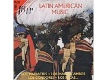

> Canción de octubre “La Cucaracha” corrido mexicano Letra de la canción: *La cucaracha, la cucaracha ya no puede caminar porque no tiene porque le falta marihuana que fumar (*Repetir) Con las barbas de Carranza voy a hacer una toquilla para ponerle al sombrero del señor Francisco Villa (*Repetir) Una cosa me da risa Pancho Villa sin camisa Ya se van los carrancistas porque vienen los villistas (*Repetir) De la canción: メキシコ革命 Revolución mexicana と Pancho Villa ラテンアメリカの社会の多くは、1492年にCristóbal Colón (Christopher Columbus) らが到来して以降、スペイン人をはじめとするヨーロッパ人たちによる先住民社会の征服が行われ、また、先住民人口がもともと少なかったり激減した地域へのアフリカからの奴隷輸入が行われました。そこでは、白人が土地を所有し、先住民や黒人あるいは混血した人々が強制的・半強制的労働を強いられたり、小作農として土地所有者のために富を生み出すという構図が生み出されました。そのような構図は19世紀初期にラテンアメリカの旧スペイン植民地が政治的に独立し共和国となった後も変わることはありませんでした。 20世紀に入って、そのような状況を変える試みがなされました。1910年代から40年代にかけてメキシコで生じた大きな変化もその一つで、メキシコ革命と呼ばれています。 メキシコでは19世紀後半にPorfilio Díaz将軍が大統領に就任し独裁体制を敷いていましたが、1910年にFrancisco MaderoがDíaz体制の打倒を呼びかけ、革命が始まりました。翌年Díazは亡命し、Maderoが大統領に就任しますが1913年に暗殺され、内戦状態は激化します。この状
